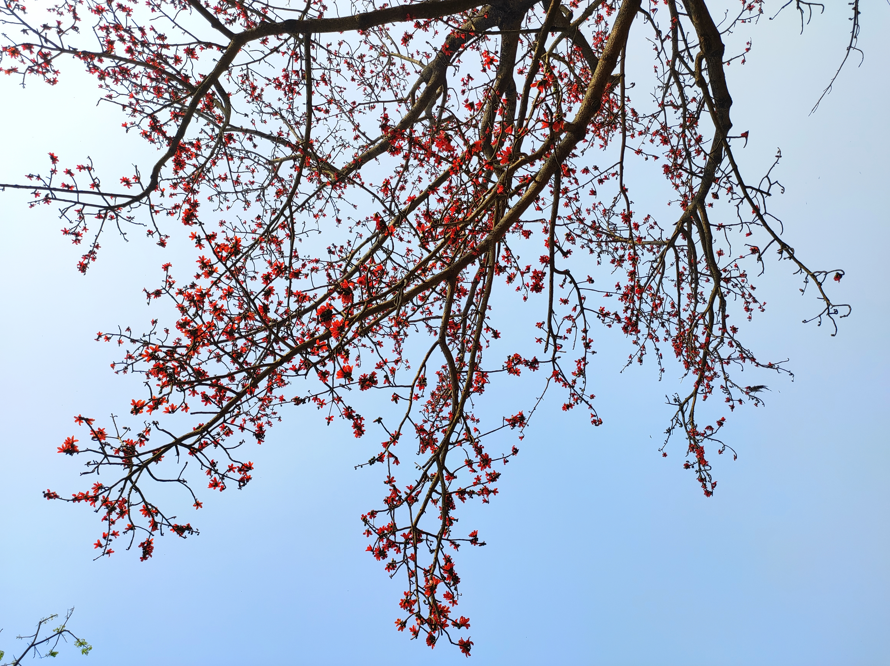

< Go Back

Shimul tree
Detail:
This tree is mainly known as the Red Silk Cotton tree. If I am ever asked what my favorite tree is, I will probably mention this one. During the winter months, it sheds all its leaves and bursts into vibrant, red, cup-shaped flowers. No joke, the flowers on this tree are really big, especially considering how many of them there are. If you look up from underneath the tree against a blue sky, it simply looks like the biggest bouquet of flowers there could possibly be (if the bouquet was the size of a five-story building!).